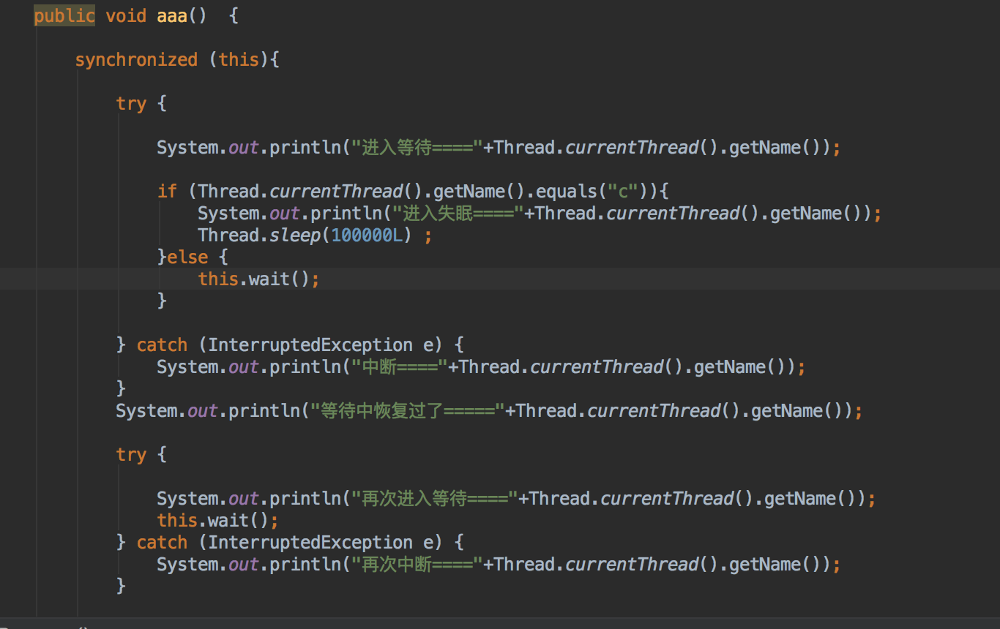

interrupt 中断是一种请求信号，它不会真正去中断一个运行的线程，而是发出中断请求，而这种请求表现形式通过boolean 值来表示的，接收到请求线程的可以根据boolean 状态来做成相应处理，如何应答发送请求的线程是通过改写状态指来做的， 如发送中断请求的线程收到应答为true，说明接收请求线程未响应中断或者此时不响应中断，如果为false说明线程响应了中断但是未必马上退出方法具体看情况退出或者其他逻辑处理。
响应中断状态的方法 （1）wail,sleep和join 对中断敏感的，在调用这些方法之前收到中断请求或者运行时发现中断请求，会抛出中断异InterruptedException同时会将中断状态设置为false ，如果抛出异常是会需要给线程获取到锁从wail方法返回继续执行，如何另外线程一直未释放锁 那么将会一直等待下，直到获取到锁才相应中断请求。

假如第一线程a进入获取到锁，且进入等待，其次线程c进入并且睡眠，睡眠是不会释放锁的，此时如果另外的线程f在调用线程a 那么中断请求需要等到c执行完成且释放锁a再次获取到锁才会抛出异常
中断一个被wail,sleep,join 以及LockSupport.park() 阻塞的线程都会从该方法返回,只是wail需要再次获取到锁才返回，除了park不会抛出异常也不会修改中断状态，其他都会修改中断状态 （2）自定义对中断状态的判断来决定是否相应中断请求
在一个放弃CPU运行的线程上调用中断会出现异常（因为给一个不运行的线程发送中断信号本身就是错误）,但是jvm会唤醒线程从睡眠或者它状态运行，以相应中断信号，但是此时中断状态会被重新设置成未中断状态。 其他线程获取被中断线程的中断信号不太准确（原因 被中断的线程和调用中断的线程运行情况不一样，所以调用中断的线程的到状态会有延迟）可以在中断线程和被中线程中做一个中断信号数据同步，比如volatile
不相应中断请求和不可中断的阻塞
（1）线程在获取synchronized(内锁)的时候进入阻塞状态，线程不会相应中断请求，只会更改状态，线程任务自己一定能获取到锁，只能等待下去。 （2）IO操作(可以重些interrupt()方法 ,中调用close())
设置中断状态 （1）对象thread.interrupt() 方法会将目标线程中断状态设置为true(中断)
（2）静态方法Thread.interrupted()会将中断状态设置为未中断状态false,且返回上一个中断状态（true或者flase）
获取中断状态的方法 （1）静态获取 Thread.interrupted() 返回之前中断状态，且会重新将中断状态设置为未中断状态（判断当前线程是否发出中断请求，并且取消中断标志） （2）对象thread.isInterrupted() 且不会改变线程的状态标志。（这个应用线程是否中断）
中断的使用场景 多个线程运行，无法通过 线程之间的共享状态来 取消其中某个线程运行，那么用中断是最简单的，但是在发送中断请求时一定要清楚被中断的线程如何影响中断。
中断可以在线程退出时安全的过度 例如：close ，以及将缓冲写入文件，等等 收尾工作
什么是响应中断请求 如果一个线程接收到其他线程或者自身发出的中断请求，且对中断请求状态做出了修改，这就是中断响应。比如通过Thread.interrupted() 会将中断状态true修改为flase；，或者抛出异常都会将中断状态设置为flase，将中断状态true 修改flase 的意思是 我已经收到中断请求了，
Thread.interrupted()
public static boolean interrupted() {
return currentThread().isInterrupted(true); //设置中断，并且返回中断状态
}
Thread.isInterrupted()//只在当前线程中调用，调用返回中断状态，而在当前线程返回中断状态，就表示相应了中断请求，故设置中断状态未取消----也是一种相应中断快捷方式
public boolean isInterrupted() {
return isInterrupted(false); //设置中断状态 取消
}